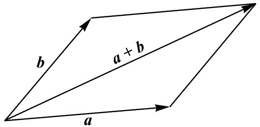

2．三维“复数”的寻找
向量的概念，即可以代表力、速度或加速度的大小和方向的有向线段的概念，平静地进入了数学。亚里士多德就知道力可以表示成向量，两个力的组合的作用可以用著名的平行四边形法则来得到，即由两个向量a和b（图32.1）形成的平行四边形的对角线给出合力的大小和方向。斯蒂文（Simon Stevin）在静力学问题中应用平行四边形法则，而伽利略清楚地叙述了这个定律。

图32.1
在稍微熟悉了由韦塞尔、阿尔冈和高斯提供的复数的几何表示之后，数学家们认识到复数能用来表示平面上的向量和研究向量。例如，设两个向量分别由3＋2i和2＋4i代表，则这两个复数的和，即5＋6i代表了用平行四边形法则相加的向量的和。复数对于平面向量所做的事情，就是提供了表示向量及其运算的一个代数。人们不一定要几何地作出这些运算，但能够代数地研究它们，很像曲线的方程能用来表示曲线和研究曲线。
复数用于表示平面上的向量，在1830年时就是熟知的了，然而，复数的利用是受限制的。设有几个力作用于一物体，这些力不一定在一个平面上。代数上为了处理这些力需要复数的一个三维类似物，我们能用点的通常的笛卡儿坐标（x，y，z）来代表从原点到该点的向量，但不存在三元数组的运算来表现向量的运算。这些运算和复数的情况一样，表面上看来必须包括加法、减法、乘法和除法，而且要服从通常的结合律、交换律和分配律，使代数的运算能自由而有效地运用。数学家们开始寻找所谓三维的复数以及它的代数。
韦塞尔、高斯、塞尔瓦、默比乌斯（Augustus Ferdinand Möbius）和其他人继续研究了这个问题．高斯(7)关于空间的运算写了一篇未发表的短文（注明1819年）。他把复数想象为位移；a＋bi是沿一固定方向移动a个单位，接着在一垂直方向移动b个单位。由此他试图建立一个三分量的数的代数，其中第三个分量代表a＋bi平面的垂直方向上的位移。他得到了一个非交换代数，但它不是物理学家所需要的有效的代数，而且由于未发表，这篇著作影响不大。
复数的有用的空间类似物的创造属于哈密顿（1805—1865）．仅次于牛顿，哈密顿是最伟大的英国数学家，并且和牛顿一样，他作为一个物理学家甚至比作为一个数学家更伟大。5岁时，哈密顿就能读拉丁文、希腊文和希伯来文；8岁时，添了意大利文和法文；10岁时又能读阿拉伯文和梵文；而14岁时还能读波斯文。同快速计算器的一次接触，激励他去研究数学。1823年他进了都柏林的三一学院，他是一个出色的学生。1822年，他17岁时准备了一篇关于焦散曲线的文章，1824年在爱尔兰皇家科学院宣读，但未发表。哈密顿被劝告去重做和发展它。1827年他呈送给这科学院一篇题为《光线系统的理论》（A Theory of Systems of Rays）的修改稿，该文建立了几何光学的科学。这里他引进了所谓光学特征函数。该文于1828年发表在《爱尔兰皇家科学院学报》（Transactions of the Royal Irish Academy）上(8)。
1827年，当他还是一个大学生时，就被任命为三一学院的天文教授，用此职位就赢得了爱尔兰皇家天文学家的头衔。他作为教授的任务是演讲科学和管理天文观察。他对后一工作没做很多事，但他是一个好教师。
从1830年到1832年他对于《光线系统的理论》发表了三个补充。在第三篇文章(9)中，他指出在双轴晶体中按某一特殊方向传播的光线将产生折射光线的一个圆锥。这个现象被他的朋友和同事劳埃德（Humphrey Lloyd）用实验证实了。后来哈密顿把他关于光学的思想归入到动力学中，并在动力学领域中写了两篇很著名的文章（第30章），文中他用了在光学中建立的特征函数的概念。他还对物体系统的运动的微分方程给出了一组完全而严密的积分。他的主要数学工作是四元数这个科目，我们将简短地讨论它。他把他的这项工作的最后形式介绍在他的《四元数讲义》（Lectures on Quaternions，1853）和死后出版的两卷《四元数基础》（Elements of Quaternions，1866）中。
哈密顿善于利用对比去从已知论证未知。虽然他有很好的直观，但他没有伟大的思想灵感，他长期而勤奋地对特殊问题进行工作以求看出一般性的东西。在解决许多特定的例子时他耐心而有条不紊，并且情愿作大量的计算去检查和证明一个论点。然而，在他的出版物中，却只有推敲和压缩了的一般结果。
他笃信宗教，这方面的兴趣对他来说是最重要的。其次是玄学（形而上学）、数学、诗、物理和一般文学。他还写诗。他认为，在他那个时代创造出的几何概念，彭赛列（Jean Victor Poncelet）和沙勒（第35章）的著作中使用的无限元素和虚元素都和诗类似。虽然他是一个谦虚的人，但他承认且甚至强调，喜爱名望会推动和振奋大数学家。
哈密顿澄清了复数的概念，这使他能更清楚地思考引进三维类似物以代表空间的向量。但是直接的效果使他的努力失望。当时数学家们所知道的全部数都具有乘法交换性，因而对于哈密顿来说也自然地相信他要寻找的三维或三分量的数应同样具有这个性质，同时具有实数和复数的其他性质。经过一些年的努力之后，哈密顿发现自己被迫应作两个让步。第一个是他的新数包含四个分量，而第二个是他必须牺牲乘法交换律。两个特点对代数学都是革命性的。他称这新的数为四元数。
事后来认识，我们能看到在几何的基础上，新的“数”必须包含四个分量。把这个新数看成一个算子，期望对一个给定的向量绕空间中一给定轴进行转动并将它进行伸缩。为此目的需要两个参数（角度）来固定转动轴，需要一个参数来规定转动角度，还需要第四个参数来规定给定向量的伸长和缩短。
哈密顿自己描述了他的四元数的发现(10)：
明天是四元数的第15个生日。1843年10月16日，当我和哈密顿女士步行去都柏林途中来到布鲁厄姆（Brougham）桥的时候，它们就来到了人世间，或者说出生了，发育成熟了。这就是说，此时此地我感到思想的电路接通了，而从中落下的火花就是I，J，K之间的基本方程；恰恰就是我此后使用它们的那个样子。我当场抽出笔记本，它还在，就将这些作了记录，同一时刻，我感到也许值得花上未来的至少10年（也许15年）的劳动。但当时已完全可以说，这是因我感觉到一个问题就在那一刻已经解决了，智力该缓口气了，它已经纠缠住我至少15年了。
1843年他在爱尔兰皇家科学院会议上宣告了四元数的发明，为发展这个课题他付出了余生，并且为它写了许多文章。